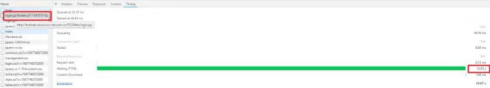
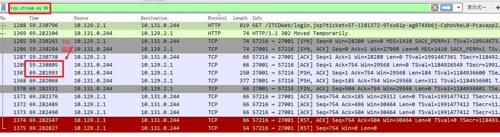
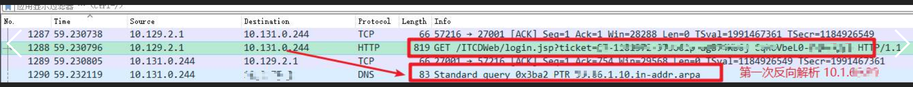
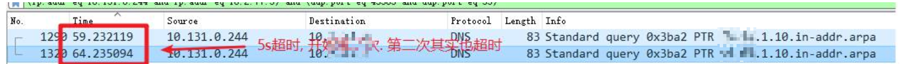
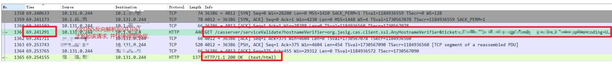

Kubernetes 疑难问题排查 - 10s 延迟
在 2019-10-01 Tuesday 发布于 DevOps 分类 • 2 min read
现象¶
首次通过单点登录系统(下称CAS)访问需求系统, 会等10s才能进入到需求系统的页面.
背景概述¶
- 单点登录系统位于公司传统环境;
- 需求系统位于公司K8S容器平台(openshift)上;
- 公司K8S容器平台位于公司私有云环境(网络为SDN);
- ...
分析过程¶
该问题比较复杂, 主要是在于网络架构的复杂. 正如上文所述, 这两个系统的交互, 涉及到:
- 传统网络架构
- 私有云的SDN网络架构
- 以及架构在私有云之上的OpenShift OVS(OpenVSwitch) SDN网络
举个简单的例子, 如果容器A要访问外部系统, 网络流应该是这样的:
eth0(容器A的网卡) → vethA → br0→ tun0 → (NAT) 1→ (私有云网络) → (传统网络F5 -> 传统网络相关虚机)
备注:
br0:
连接到pod容器的OVS桥设备。OpenShift SDN还在这个桥上配置一组非子网特定的流规则。
tun0:
OVS内部端口(br0上的端口2)。它被分配给集群子网网关地址，用于外部网络访问。OpenShift SDN配置netfilter和路由规则，允许从集群子网通过NAT访问外部网络。
NAT:
网络地址转换
后边的私有云网络和传统环境网络不太熟, 所以就没有详细描述, 实际上网络节点也不少.
目前首先第一步要做的就是缩小范围 -- 尽可能的缩小怀疑点的范围. 方便进一步定位.
具体操作步骤如下:
第一阶段 抓包并分析¶
经过初步分析，得到如下结论：
-
用户通过CAS的页面点击需求系统, 这时会带着Ticket跳转到需求系统:
"GET http://itweb.cloud.example.com.cn/login.jsp?ticket=XX-1144737-F6gZZyxhe0IfKxBJS4zjuf9Csz4-cas2 HTTP/1.1" -
我们首先通过Chrome的F12开发工具来进行查看，发现正是上边的这个请求耗时10s，且10s都是在
Waitting(TTFR)如下图: (TODO: 图太糊, 需要重新截一个)

-
以上请求是在需求系统内进行处理, 且我们之前已经了解到未上容器之前不存在这个问题, 所以基本排除需求系统应用问题的可能性. 那么就需要抓取需求系统的APP所在容器(以下简称pod a)的网络包, 确定是不是网络问题.
-
通过
tcpdump命令抓取pod a网卡的所有流量. 并且在这期间复现该问题. -
通过WireShark打开进行分析, 由于知道是上边的请求有问题, 所以专门看这个请求的TCP流. 结果如下:

-
如上图标红处的时间, 可以明显的看到, pod a(IP为: 10.131.0.244)收到上述的请求后, 返回了http code 302, 然后进行TCP的3次握手. 然后就出问题了,
PSH+ACK的动作是在10s后才发出的!!! -
这一次, 根据源IP(pod A)和目的IP(可以理解为K8S Ingress 的tun0的IP), 初步判定是: 容器 -> Ingress之间出现了10s的延迟.
关于K8S上网络抓包，后续会再写一篇文章: 《K8S上网络抓包的3种方式》. 敬请期待~
第二阶段 细化分析和排除阶段¶
上一阶段, 初步确定了是: 容器 -> Ingress之间出现了10s的延迟.
那么后续就计划对者之间的网络进一步的进行分析. 为此准备了2套方案:
- 排除法, 由于pod A和Ingress不在同一台虚机上, 而这两台虚机之间的交互就会牵扯到: OpenShift的OVS网络以及私有云的SDN网络. 所以希望通过将pod A调度到Ingress所在的主机上, 观察结果来进行排除.
- 如果调度到同一台主机后, 仍然存在该问题, 则排除私有云SDN出问题的可能性;
- 如果调度后问题解决, 那么就可能是: OpenShift的OVS网络或私有云的SDN网络的问题.
- 细化分析. 之前只是简单抓了pod A的包. 后续计划将涉及到的所有网络节点进行抓包, 包括:
- pod A
- pod A所在主机
- 私有云SDN相关网络设备
- Ingress所在主机
- Ingress pod
但是在这一阶段碰到了各种困难, 使得这2个方案都没有最终被执行.
所以我们继续希望通过之前的那个网络包, 分析到更多细节, 我们从2个方面进行:
- 请网络组老师看一下这个网络包, 网络组老师的反馈是: 基本断定是pod A的问题, 不需要再抓其他包
- 联系需求系统和CAS项目组老师, 进一步了解业务流程细节. 期望获取更多细节.
而这2个方面也取得了比较大的收获!
第三阶段 业务流程梳理¶
重点关注首次登录需求系统这个业务流程.
有的用户是先访问CAS, 登录CAS, 再通过CAS跳转进入需求系统;
有的用户是先访问CAS, 不登陆, 通过CAS跳转到需求系统, 再反过来登录验证并进入需求系统;
有的用户是直接访问需求系统, 跳转到单点登录, 登录认证后进入需求系统.
有以上三种情况, 本质上都是一样的. 就是需求系统需要和CAS交互.
下边选择一个最常用的流程做说明.
- 用户访问并登录单点登录系统;
- 此时用户会获取到一个Ticket, 格式实例如下:
XX-1144737-F6gZZyxhe0IfKxBJS4zjuf9Csz4-<instancename> - 这期间用户并不会访问需求系统
- 此时用户会获取到一个Ticket, 格式实例如下:
- 用户通过CAS的页面点击需求系统, 这时会带着Ticket跳转到需求系统:
"GET http://itweb.cloud.example.com.cn/login.jsp?ticket=XX-1144737-F6gZZyxhe0IfKxBJS4zjuf9Csz4-cas2 HTTP/1.1" - 需求系统收到该请求, 会回访CAS验证:
“GET http://10.1.XX.XX:XXXX/casserver/serviceValidate?hostnameVerifier=org.jasig.cas.client.ssl.AnyHostnameVerifier&ticket= XX-1144737-F6gZZyxhe0IfKxBJS4zjuf9Csz4-cas2&encoding=UTF-8&service=http%3A%2F%2Fitweb.cloud.example.com.cn%2F”. - CAS验证后返回结果给需求系统:
- 验证通过, 正常登录, 进入需求系统主页面;
- 验证不通过, 提示你无权访问该系统.
项目组老师重点提到, 根据他们的日志来看, 是第3步慢了10s.
第四阶段 定位¶
和网络组老师和项目组老师沟通受益颇多:
- 网络组老师: 基本断定是pod A的问题
- 项目组老师: 是第3步(需求系统回访CAS验证)慢了10s.
我们决定再次查看之前抓取的网络包, 仔细看一下CAS访问单点登录系统后, 网络上都发生了什么. 而这一次, 我们终于抓到了蛛丝马迹!
这次不再关注某一个TCP流, 而是关注接收到请求后, 都发生了什么.
- 收到请求后, pod A要访问CAS 10.1.XX.XX, 注意这一次: 不是直接访问CAS的IP, 而是先做反向DNS解析!!!如下图:

- 第一次反向DNS解析2, DNS server没返回任何信息, 5s超时. (网络流比较长, 就不附图了, 反正接下来5s都没有看到DNS server有返回信息). 开始进行第二次反向DNS解析, 如下图:

- 2次DNS反解析失败后, 第三次就不做反向DNS解析了, 而是直接访问, 并快速得到结果. 所以每次都是等待10s才进入系统. 如下图:

原因总结¶
需求系统访问单点登录10.1.XX.XX:XXXX花了10s, 是因为那次请求会进行反向dns解析。结果解析2次不成功。dns一次解析超时是5s3… 第三次就不解析了直接访问. 所以就是每次等10s. 
其实应该不是需求系统会做反向DNS解析, 而是它部署在WebLogic中间件上, WebLogic中间件会进行反向DNS解析.
我之所以知道这个事情, 是因为有次某寿险公司有一次生产DNS出故障了, 排查的时候发现海量的反向DNS解析来自weblogic.
有时间可以再来一篇相关的内容.
解决方案¶
- 尝试在需求系统启动项种加入禁止反向解析的参数, 测试不生效.
- Openshift每台节点都会启动一个dnsmasq进程用作集群内部dns处理, 将worker节点的dnsmasq加入如下配置并重启. 使得反向DNS解析成功. 则问题解决.
ptr-record=XX.XX.1.10.in-addr.arpa, 10.1.XX.XX
总结¶
至此, 我们完整的梳理了需求系统首次登录要等10s的问题, 分析过程信息量比较大, 牵涉的环节也比较多. 其实最后定位的原因, 也和K8S的网络, 私有云的网络灯新技术没啥关系. 问题还是老问题.
- 强烈不建议将传统软件硬塞入容器内, 坑不止这一个;

- K8S采用后, 网络复杂性会大幅上升, 分析K8S上网络问题, 网络分析手段必不可少;
- 分析问题过程中, 三人行, 必有我师焉, 多与其他老师交流沟通, 发散思维, 避免走入死胡同.